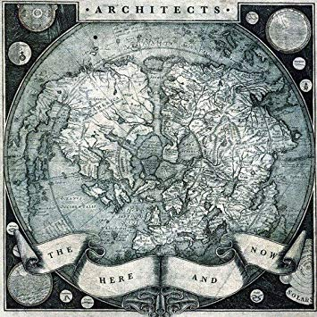
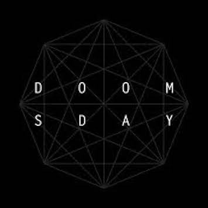
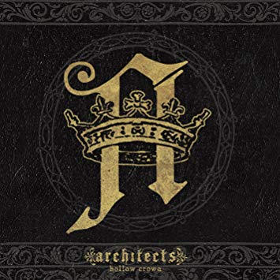
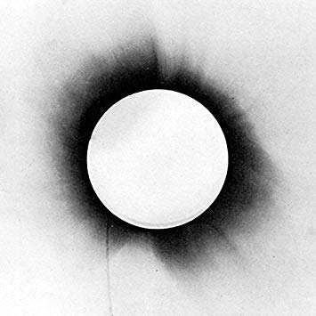

| Architects is a metalcore band from Brighton, East Sussex. The band was formed in 2004 by twin brothers Dan and Tom Searle. The band started with Dan as the drummer, Tom as the guitarist, Tim Hillier-brook and Tim Lucas as the bassists, and Matt Johnson as the lead singer. The bands original sound was coarse, chaotic, and rhythmically complex, but they did not keep this sound for very long. In 2006 after the release of their debut album Nightmares Matt left the band and was replaced by Sam carter. Carter drew from more personal experiences with his lyrics then Matt. The bassist Tim Lucas left the band in 2006 and was replaced by Alex dean. After these changes they quickly released their second album Ruin in 2007. In 2008 they signed to Century Media Records and soon afterwards they released their third album Hollow Crown in 2009. In 2011 they released their fourth studio album named The Here and Now , the album took a more melodic post-hardcore direction instead of the more technical sound they were known for. The departure from their normal genre caused some fans to be disappointed, but the change was seen as a logical progression for the band. Then in 2012 the band put out its fifth album Daybreaker , it received a mixed reception from fans and critics due to the album being “catchy and occasionally compelling, but identical and formulaic”. Soon before the launch of the album Tim Hillier-Brook announced he would be leaving the band and would be later replaced with Adam Christianson. Around mid 2013 the band changed record labels for the final time to Epitaph records. After 2 years they released the album All Our Gods Have Abandoned Us in 2015. Unlike their previous album it received a very good reception among fans and critics and moved back to their metalcore roots. |
  | |
|   |
Everything up until this point seemed to be getting better for the band. But this streak of greatness came to an end on the 20th of august, 2016, when Tom Searle, Dans brother and the founding gitaurist, died at the age of 28 after fighting melanoma for 3 years. Melanoma is a type of skin cancer that develops from the pigment-containing cells known as melanocytes. Initially in 2013 Tom was declared cancer free after having a leg surgery to remove the cancer, but the cancer later returned. Originally the band never officially announced that Tom had cancer, but it was referenced to in the song "C.A.N.C.E.R". from the album forever lost .
After Toms death the band made this statement on the future of the band “We want to carry on, that is important to say, and we will strive to do so, but we will not release any music unless we truly believe that it is something that Tom would have been proud of”. After being silent on the matter for 2 years they released a single titled “Doomsday”, which was a song that Tom was unable to finish before passing away. The song was meant to show fans that there was still a future for the band. Then on November 9th 2018 they released their 8th album Holy Hell .